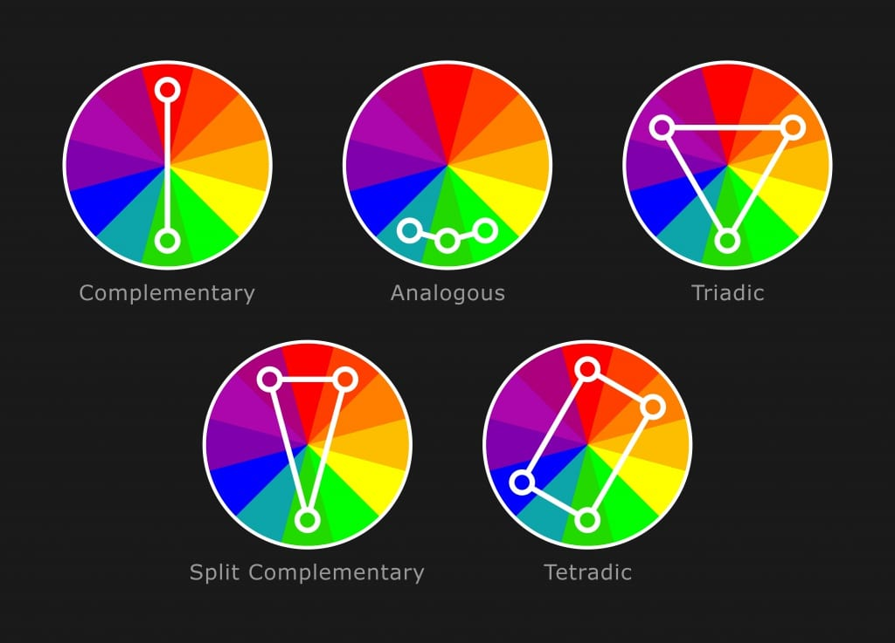

Cores e suas combinações
Fazer combinação de cores não depende de dom e nem somente de bom senso. Na verdade, existe técnica para isso, mas sabemos que as dúvidas são muitas. Este artigo visa ajudar a entender como funciona o círculo cromático e a combinação de cores.
O círculo cromático

Analisando atentamente o círculo cromático, percebemos as três cores primárias, que estão destacadas no centro em um triângulo: amarelo, vermelho e azul.
Da junção das cores primárias, temos as três cores secundárias, que são o laranja (amarelo+vermelho), o violeta/roxo (azul+vermelho) e o verde (azul+amarelo).
Da junção de uma cor primária com uma secundária, temos as seis cores terciárias:
- Amarelo-esverdeado (amarelo+verde)
- Amarelo-alaranjado (amarelo+laranja)
- Vermelho-alaranjado (vermelho+laranja)
- Vermelho-arroxeado (vermelho+roxo)
- Azul-arroxeado (azul+roxo)
- Azul-esverdeado (azul+verde)
Paleta de cores e sua criação
As paletas de cores são conjuntos de cores pré-selecionadas utilizadas de forma harmônica, visando passar alguma ideia para quem visualiza, gerando assim a identidade visual de algo.
Muitos não imaginam, mas as paletas de cores estão presentes em tudo que olhamos (escolhidas de forma natural ou pensadas), seja na decoração de uma casa, nas cores de um site, em materiais gráficos de uma empresa, em uma logo, etc.
Combinações de cores
Para a criação de uma paleta de cores que seja armônica, é necessário um bom entendimento sobre as combinações de cores e suas características.
Cores complementares
São aquelas que apresentam o maior contraste entre si. Elas estão localizadas do lado imediatamente oposto do círculo cromático. Se pegarmos qualquer cor primária, a sua cor complementar é sempre uma cor secundária. De forma similar, qualquer cor terciária tem uma outra cor terciária como complementar. Quando juntamos duas cores complementares, sempre obtemos o cinza.
Uma variação deste esquema seria o esquema de cores complementares divididas, aonde uma cor principal é usada junta com as adjacentes da outra cor, resultando em um contraste menos agressivo e mais interessante.

Existe uma terceira variação chamada cores complementares em dupla, aonde é usado as adjacentes das duas cores, podendo usar cores primárias com secundárias ou somente terciárias. Mas ela torna-se um esquema difícil de se trabalhar pois existe um desequilíbrio entre as combinações, então precisa-se pensar bem se optar por este esquema.
Cores análogas
Diferente das cores complementares, que estão do lado extremo oposto no círculo cromático, as cores análogas são aquelas que são imediatamente vizinhas entre si.

Existe um outra esquema de cores análogas intercaladas, aonde o contraste costuma ser maior. Dependendo da posição no círculo, as cores podem ser um pouco difíceis de combinar. Uma dica seria usar somente cores frias ou quentes.
Uma terceira opção seria usar cores análogas com uma cor complementar, aonde a cor complementar assume um controle maior sobre as outras cores, aumentando bastante o contraste.
Cores triádicas
Técnica bastante utilizada e que garante uma grande riqueza de cores, onde escolhemos três pontos equidistantes no círculo cromático. Esse esquema gera sempre um triângulo equilátero e cria uma opção que sempre possui um ótimo contraste entre as cores.
Neste caso, as cores sempre serão somente primárias, secundárias ou terciárias. Elas nunca vão se misturar.
Cores tetrádicas
Assim como o triádico, o esquema de cores tetrádicas também pega cores posicionadas em uma distância igual, mas ao invés de três cores, é escolhido quatro cores, formando um quadrado perfeito.
Porém pode-se optar por selecionar dois pares de cores complementares lado a lado para conseguir uma combinação de cores com bastante contraste e muito fácil de se trabalhar.
Adobe Color
Olhando as imagens acima, foi usado um círculo cromático limitado. No caso de estudar uma combinação, usa-se um círculo cromático com muito mais cores. Um exemplo pode ser visto no serviço da Adobe chamado Adobe Color, aonde é possível planejar as cores através de um disco de cores interativo, podendo definir 5 cores em posições variadas seguindo esquemas harmônicos similares aos citados acima. Vale a pena dar uma olhada.
Para complementar, segue um vídeo do canal Guararapes sobre a combinação de cores e o seu uso dentro da arquitetura.